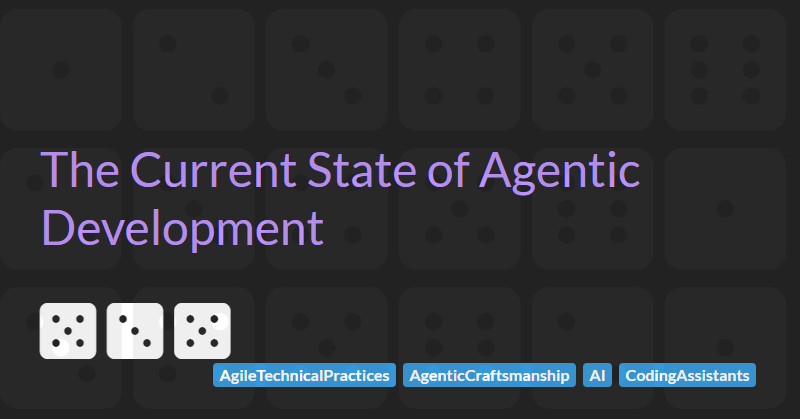

The Current State of Agentic Development

In An Argument For Agentic Craftsmanship I argued that handing the coding to an agent takes three things away from a delivery team: ownership, understanding, and pushback. That article was about what changes and why it matters. This article is about what the published evidence says is actually happening, because a reasonable response to any argument is to ask what the numbers show.
Quite a lot of numbers landed in the past twelve months. DORA surveyed around five thousand technology professionals. Faros AI analysed two years of telemetry from twenty-two thousand developers. LinearB went through 8.1 million pull requests. CircleCI looked at nearly twenty-nine million CI workflows. Atlassian surveyed twelve thousand knowledge workers. Alongside those sit a growing body of controlled experiments and a research literature on agent-authored code that barely existed eighteen months ago.
These reports do not agree with each other and in at least one case a vendor rebuts another by name.
I have spent the past few weeks ingesting all the data I can find, because I wanted to know which parts hold up. What follows is a survey rather than an argument. I have tried to separate what the evidence supports from what I conclude from it, and to be explicit about the difference.
If five organisations measure the same industry in the same year and reach different conclusions, which of them should you believe?
Much of this article is detailed analysis of the published sources and experiments. If you want to get to the conclusions then skip to the summary.
Three Instruments
The disagreements between the published reports are not random. Sort the sources by how they gathered their data and most of the conflicts resolve themselves.
- Ask the person. DORA and Atlassian run surveys. These can see perception, trust, intent and culture. They cannot see anything downstream of the individual answering the question, anything that takes weeks to show up, or anything that person cannot observe from their own desk.
- Read the artefacts. Faros, LinearB, and CircleCI review queues, incidents, deployments and the code itself. These can see what happened. They cannot see why, whether the software was any good for its users, or whether the organisation is well run.
- Randomise and compare. Other publications use controlled experiments that can establish cause and nothing else. They cannot see scale, real production conditions, or long time horizons.
Every source that is built on asking developers how things are going finds improvement. Every source that is built on reading artefacts finds strain. Both are honest, and both are describing the same system from opposite ends.
Faros makes this argument itself, and I think it is worth quoting here because it is the clearest statement of the problem I have found: "Surveys capture how developers feel about their work. And right now, developers feel more productive, because at the individual level, they are... What surveys cannot capture is what happens downstream."
They have an obvious interest in saying so, because they sell the instrumentation. Worth noticing that most of the five reports diagnose a bottleneck its own product happens to relieve. CircleCI finds that validation cannot keep pace and sells CI. Faros finds that you cannot see what is happening and sells visibility. LinearB finds that you are not measuring and sells measurement. Atlassian finds that coordination is the constraint and sells Jira.
None of that means anybody fabricated anything. But I think it does mean that a finding which survives across sources with opposed commercial interests is worth far more than one that does not. That is a rule I have used throughout this article to assess claims made by each source.
Where The Evidence Agrees
Four findings hold across all three instruments:
Output is up but delivery is not. Task completion, epic completion and commit volume are up substantially everywhere. The two sources that measure production delivery directly both find it flat or falling. Faros reports deployments per week down 11% and lead time from commit to production up 480%, both measured on about a tenth of their dataset. CircleCI's branch split is the cleanest illustration, because it is the same teams measured in the same window on both sides of the integration boundary. The median team's throughput on feature branches rose 15.2%, and on the main branch it fell 6.8%. For the top ten per cent of teams, feature branches rose 49.3% and main branch activity was essentially flat at 1%. Only the top five per cent converted the increase, and even they converted it at roughly a quarter of the rate they generated it.
The phrase to use is that AI increases production rather than delivery. Nothing in the evidence supports the stronger claim.
The constraint has moved to review and integration. Faros finds median time to first review up 156.6% and median time in review up 441.5%. LinearB finds that agent-authored pull requests wait 1,055 minutes before anybody opens them, against 201 minutes for human ones. CircleCI finds the workflow success rate on the main branch at 70.8%, its lowest in over five years, against their own recommended benchmark of 90%. Nearly a third of attempts to merge into production code now fail.
LinearB's numbers deserve a closer look, because they decompose the delay in a way the others cannot. Once a reviewer starts, AI-assisted pull requests are reviewed faster than human ones, 194 minutes against 252.
There could be many reasons for AI PRs waiting longer to be reviewed and taking less time to review but if we put these statistics next to Faros finding that 31.3% more pull requests are merged with no review at all, then I think the mechanism is fairly clear: reviewers avoid AI pull requests, skim the ones they cannot avoid, and merge a growing share without looking. LinearB's own survey respondents describe it as "a larger amount of code slips into production without proper review (rubber stamping)".
Before going further, I feel I need to caveat the statement about unreviewed merges. It is the number in this article I would most expect a reader to challenge because merging without a pull request review is perfectly normal on teams that pair and follow trunk-based development. When these practices are employed the review already happened at the keyboard and a second one afterwards would be waste. Counting unreviewed merges as a defect would mark down some of the best teams I have worked with.
I can think of no reason why adopting AI would cause a team to take up pairing or trunk-based development. The reading I find more plausible is volume: more changes arriving than a review process built for human output can absorb.
This also matters for anyone planning to fix the problem by adding reviewers. If developers are avoiding reviewing AI generated code then increasing headcount is unlikely to have an impact.
Changes got bigger. A larger change is slower to pick up, takes longer to review properly, carries a wider blast radius when it breaks, and accumulates structural problems faster. Faros reports average pull request size up 51.3% and files touched per developer per month up 149.9%. LinearB puts AI-assisted pull requests at 408 lines at the 75th percentile against 157 for unassisted ones. An independent academic comparison of AI-generated and matched human files found AI files 33% longer. A Concordia study measured a correlation of 0.94 between total lines of code and architectural smells, which means volume growth degrades structure without anybody making a bad decision anywhere.
There is a detail in LinearB's data that changes where the fix belongs. At commit level the pattern inverts: AI-assisted commits touch fewer files, 4.2 against 7.51, and contain fewer lines, 273 against 498. The tooling seems to produce tighter commits and then aggregates far more of them into each pull request. The reviewable unit got bigger while the atomic unit got smaller, so a size limit belongs at the pull request boundary rather than the commit.
Refactoring has collapsed. This is the most convergent finding in the whole literature, and the one that troubles me most. GitClear, analysing 623 million code changes, reports that moved lines fell from 21% of changed lines in 2022 to 3.8% in 2026, while copy-paste rose to 15.7%. Copy-paste now runs at roughly five times the rate of refactoring. Updates to code more than a year old fell from 1.7% of changes to 0.46%.
LinearB reaches the same conclusion from a completely different measurement. Their refactor rate, the share of changes touching code more than 21 days old, is 0.37 for unassisted pull requests against 0.22 for AI-assisted and 0.17 for agentic ones.
Three independent academic studies then explain what is happening. Agents do refactor, in around a quarter of their commits. What they do is renames, annotations and local tidying. One study of Java projects found Claude Code's refactorings were 91% annotation-related. Another found that duplication removal accounts for 1.1% of agent refactorings against 13.7% of human ones, and that design smell counts are statistically unchanged before and after.
The consolidating work, removing duplication, extracting reuse, restructuring across module boundaries, is the work with no visible failure when it is omitted, and it seems to be quietly stopping. No delivery metric will surface this but it will compound over time and result in lower quality codebases.
Measuring Attribution
Here is the problem with almost every statistic you have read about agentic adoption, including several I have quoted approvingly in past articles.
The most cited number in the field is that fewer than 1% of pull requests are opened by an autonomous agent. Faros measures it, LinearB's later edition puts agent-authored share at 0.1% for the median organisation and 4.7% in the top decile, and DORA found 61% of respondents never using agent mode at all. The conclusion everybody draws is that agentic development is still marginal, and that the risks are therefore somebody else's problem for now.
I believe that this conclusion does not follow, because the measurement is of the wrong thing. Git metadata records who opened a pull request. It records nothing about how the diff was produced. A developer who runs an agent unsupervised for half an hour and then submits the result herself is counted as assisted development by every source listed above.
Faros states plainly that the rise in code acceptance from 20% to 60% is "driven substantially by tools like Cursor and Claude Code operating in agent mode, where the agent applies changes directly". Their executive summary describes AI as "Not an assistant. The author." They then classify that same work as non-agentic, because a human opened the pull request. Both statements are in the same document and both are correct. The taxonomy is what fails.
I think a three-way split is needed.
- Assisted. A human types, the model suggests, the human accepts or rejects line by line. Autocomplete and turn-by-turn chat. This is measured well in the sources.
- Agent-mode authoring. An agent writes and applies changes across several files with reduced supervision, and a human reviews the result and opens the pull request. The person contributes direction and judgement rather than typing. Measured separately by nobody.
- Autonomous. An agent opens the pull request without human initiation. Rare, and reliably measured as rare.
The middle tier is where I see most enterprise teams operating today, and it is invisible in every published source. There is circumstantial support for its size in LinearB's own figures: their AI-assisted bucket has the largest pull requests of all three categories at the 75th percentile, 408 lines against 293 for the explicitly agentic category. Autocomplete does not produce that shape. Long unsupervised agent sessions do.
DORA's mode data points the same way once you read past the headline. Yes, 61% never use agent mode, but 39% use it at least sometimes and 17% use it daily or more. A further 62% use what DORA calls collaborative mode, making broad coordinated code changes across a codebase, with 24% doing so daily. DORA never crosses interaction mode with outcomes, which it could have done and which would have answered a great deal.
There is also a timing problem stacked on top of some of the observations in the sources. DORA's data was collected in June and July 2025. CircleCI's covers twenty-eight days of September 2025. LinearB's benchmark edition runs to around the same point. The evidence that agentic work is rare comes disproportionately from the oldest data in the set, gathered before agent-mode tooling reached anything like its current share.
So the practical consequence, and the reason I have laboured this: if your teams are running agents at scale, the reassuring adoption statistics do not describe your exposure but the strain findings probably do.
Does Good Practice Protect You?
This is the one place where the reports argue openly, and it matters most to me and to anyone who believes in the value of engineering discipline.
DORA's central claim is that AI is an amplifier. It magnifies the strengths of capable organisations and the dysfunctions of struggling ones, and seven identified capabilities moderate the effect. Their most striking supporting result is that in the absence of a user-centric focus, AI adoption has a negative effect on team performance. The same AI tooling helps or harms depending on the environment.
Faros rejects this under a heading naming DORA directly: "All organizations suffer from the Acceleration Whiplash, irrespective of their engineering maturity. The organizations with strong pre-AI engineering practices see the same quality degradation as those without."
I have gone back and forth on this and I think the honest position is that both reports are weaker than they read.
Faros never defines or measures engineering maturity anywhere in the report. A claim of the form "X does not moderate Y" requires X to have been measured, and it was not. As published, the rebuttal does not stand up.
But DORA's amplifier thesis is softer than its framing suggests. Every outcome DORA measures is self-reported, including team performance, product performance and organisational performance. When the outcome is a perception, "capable organisations report better results from AI" is partly a statement about who reports well. And DORA's own data contains two results that cut against a clean amplifier story: quality internal platforms turned AI's neutral effect on friction harmful, so respondents in organisations with good platforms reported more friction rather than less, and working in small batches reduced the gain in individual effectiveness. Good capabilities did not uniformly amplify good outcomes even in DORA's own numbers.
There is also a problem neither report can address, which follows from the previous section. Faros is measuring a population doing far more agent-mode authoring than DORA's was. If the degradation is driven by unsupervised multi-file generation rather than by AI use in general, Faros would find it universal and DORA would not, without either being wrong.
The position I would defend is narrower than DORA's and more useful than Faros's. Capability investment changes the impact, not whether you take the quality hit. It seems everybody takes the hit.
DORA appear to accept something close to this themselves. Their ROI of AI-assisted Software Development, published in April 2026, models a J-curve in which returns arrive only after a dip, and assumes a fifteen per cent productivity drop lasting three months on the way through. Two things are worth being precise about before anybody quotes that at a board. The fifteen per cent is a default input to their calculator rather than a measured finding. And the report carries no new fieldwork at all, being modelled on the same 2025 survey data as everything else DORA has published this year. Even as an assumption though, a three month trough is a more modest picture than the amplifier framing implies, and it comes from the organisation doing the amplifying.
There is a small reward for craft buried in the small batches finding, and I think it is the most quietly interesting result in the DORA report. Working in small batches amplifies AI's effect on product performance and turns its neutral effect on friction into a reduction, while slightly reducing the individual effectiveness gain. Discipline makes the team better off and the individual feel slower. That trade is the whole argument for engineering practice.
What The Controlled Studies Found
Everything above is observational. Only experiments can establish cause, and there are now enough of them to be worth reading as a set. I have grouped these by what they found rather than by when they appeared, and dated each one where it turns up, because the most interesting pair is the same team disagreeing with itself a year apart.
How Much Faster? And For Whom?
Two experiments dominate every conversation about this, and they are usually presented as disagreeing with each other. They do not disagree, and working out why is more useful than either result on its own.
The stronger of the two is Cui and colleagues in Management Science, published in February 2026: three randomised field experiments across Microsoft, Accenture and an anonymous Fortune 100 firm, covering 4,867 developers given randomised access to Copilot in their actual jobs. Completed tasks rose 26.08%, with a standard error of 10.3%, and the authors note that the individual experiments are noisy. The finding that matters most is where the gain landed. Less experienced developers had both higher adoption and larger productivity gains.
The other is METR's randomised trial, the most famous experiment in the field, which found sixteen experienced open-source developers were 19% slower with AI on real issues in their own repositories. The participants had forecast a 24% speed-up before starting, and still estimated afterwards that AI had made them 20% faster.
That number needs more care than I was giving it, and it should no longer be quoted as current. METR abandoned the design in February 2026 and published their reasoning, which is worth reading in full.
Their larger follow-up ran fifty-seven developers across more than eight hundred tasks. Returning participants came out at minus 18% and newly recruited ones at minus 4%, where a negative number means slower with AI than without it. Still slower on first glance, but the confidence intervals were minus 38 to plus 9, and minus 15 to plus 9. The wide range in confidence and the fact that both ranges cross zero means, to me at least, that this study is inconclusive.
METR then explain why they distrust even those numbers, and the explanation is the part that resonated with me. Adoption has made the experiment difficult to run at all. Developers now decline to take part in a condition where they are not allowed to use AI so the people who get the most from the tools remove themselves from the sample. And between 30 and 50 per cent of the participants who did take part admitted holding back the tasks they expected AI to finish quickly, so the work AI is best at never reached the experiment. Both effects push the measured result downward, which means the published numbers are a floor rather than an estimate.
So, does AI make developers faster or slower? On this evidence nobody can say. The first study measured a slowdown and never published an interval around it. The second measured two more, and both ranges include zero. The team then concluded that every bias they could find in their own method pushed the result the same way, which makes even those figures a floor rather than a reading. Two experiments and no usable number. I respect them enormously for publishing that, and it is a reminder that the controlled evidence base is thinner than it looks, because near-universal adoption has broken the standard design.
Which leaves the two studies sitting side by side, one finding a solid gain and the other finding nothing it can measure. The reconciliation is in both papers. Cui found the gain concentrated among the less experienced. METR sampled the opposite end of that same distribution: maintainers working on repositories they had known for years. METR's own analysis names deep repository familiarity and the implicit context the model lacked among the factors behind their result, and they say plainly that AI tools are likely more useful for less experienced developers or in unfamiliar codebases. The two results are not in tension. The gain is real, and it is largest where the human knows least.
That is a less comfortable finding than either headline on its own, because it means the people getting the most from these tools are the people least equipped to notice when the output is wrong.
What Developers Believe Is Happening
So what is left of that gap between the 19% measured and the 20% believed? Less than I first wrote. The thirty-nine point version of it cannot stand on its own, because it was arithmetic on the measurement METR have since disowned. Move the measured figure and the size of the gap moves with it. The original paper never published a confidence interval for the 19% either, which I should have noticed before calling it the cleanest demonstration of anything.
What survives is the direction. Both of the biases METR identify push the measured result downward, so the true effect sits somewhere above minus 19%, and nothing in their data suggests it climbs as far as the plus 20% the participants believed. These developers were wrong about which side of zero they were on, and wrong in the flattering direction.
That much does not rest on METR alone, which is why I still trust it. Butler and colleagues at Microsoft ran a workplace trial in 2024 with both survey and telemetry outcomes, and found perceived usefulness and enjoyment rose significantly while not one telemetry measure moved: not code changes, not pull requests, not development time. Their tooling is two years old now, so that study says nothing about how fast developers are today. It says something about whether they can tell. The Anthropic trial further down finds the same shape from a third direction, with participants taking the AI route for no measurable speed gain at all.
AI Code May Not Be Harder To Maintain
On the question of whether AI-written code is harder to maintain afterwards, Borg and colleagues ran the only study I know of designed to answer it, published in Empirical Software Engineering in June 2026. A first phase had 151 developers build features with or without AI, replicating the speed-up at 30.7%. A second phase then randomised different developers to evolve the first phase's code with no AI access at all. They found no significant difference in either completion time or code quality. The authors are careful to say the sample was underpowered for small to moderate effects, so this is a weak null rather than an all-clear, and it tested assistants rather than agents. It is still the best evidence available and it cuts against my instincts, which is why I am reporting it.
Delegating To AI Costs You The Understanding
The result that gives me most pause is Anthropic's skill formation trial, published in early 2026 against their own commercial interest. Fifty-two participants learned an unfamiliar Python library with or without AI, then sat a comprehension test. The AI group scored roughly seventeen points lower, an effect size of 0.738, with no significant speed benefit at all. The interaction pattern is the useful part: participants who used AI to build understanding, asking follow-up questions and requesting explanations, scored between 65 and 86 per cent. Those who simply delegated scored between 24 and 39. The tool is not the variable. How it is used is.
The Junior Trap
Set the Anthropic result beside Cui's finding that juniors gain the most output, and the shape of the problem becomes clear. Juniors get more done and learn less from doing it. That is not a contradiction. It is a trap, and it is invisible to every metric an engineering organisation currently collects.
The risk is in what an organisation does next, and it is a reasonable decision made on bad information. A junior who ships at close to the rate of a mid-level engineer looks, on every dashboard available, like a junior who needs less support. So they get less: less pairing, less review, and fewer of the awkward tasks where somebody has to sit with a problem long enough to understand it. Delivery holds up for a while, because the tool is carrying it. What does not form is the judgement that lets an engineer notice a design drifting, or work out why a system is behaving in a way nobody predicted, or say that the code is correct and still wrong. That gap shows up years later, at the point where those engineers were meant to have become the seniors reviewing everybody else's agent output.
I made this argument in AI and The Death of The Junior Developer in July 2025 on nothing more than experience and a bad feeling. The Anthropic trial is the first controlled evidence I have seen that supports it, and I would rather it had gone the other way.
There is an organisational version of the same measurement sitting in the Faros data. They find 31.3% more pull requests merging with no review at all, and a quarter of all pull requests now reviewed by an agent rather than a person. If code review is the main route by which senior judgement reaches junior engineers, and on most teams it is, that channel is thinning at both ends at once.
The Security Gap
Security sits outside all five of the reports above, which is worth noticing on its own: an organisation running a best-practice delivery metrics programme in 2026 has no sight of it at all. The evidence comes from elsewhere, and it has moved quickly enough that the order you read it in changes the conclusion.
Veracode give the longest run. They have put successive model generations through the same eighty coding tasks across four languages since 2024, with no security-specific prompting. In July 2025 roughly 45% of generated samples failed security testing. In their spring 2026 update the pass rate was still around 55%, and I quoted that figure to clients as evidence that security had stalled. By the July 2026 edition, covering more than a hundred models, it had reached 56%. Over the same two years syntactic correctness climbed to about 100%. Models became reliably able to produce code that runs, and barely moved on producing code that is safe.
Then it started moving. Veracode's test of GPT-5.6 Sol in August 2026 put that model at 70%, well clear of the hundred-model average, with Python rising from 70% to 85%. Their revised wording is that security "is starting to move, but unevenly", and unevenly is carrying real weight in that sentence: C#, Java and JavaScript did not move, and log injection sits about where it started.
The agent picture improved on a similar curve. Endor Labs' benchmark extends peer-reviewed work from Carnegie Mellon and runs as a live leader board rather than a fixed report. It scores two hundred real vulnerability-fix tasks drawn from a hundred and eight open-source projects, and it grades whether a fix passes the tests separately from whether the fix actually closes the hole. Its best security correctness score rose from 17.3% in April 2026 to 37.4% in September. The entries added since have come in below that ceiling, with the most recent at the time of writing, dated the first of October, scoring 34.1%.
So the direct answer to whether newer models are better at security is yes. What that improvement does not tell you is what is sitting in your codebase, and I had those two questions tangled together in an earlier draft of this section. A benchmark measures what the newest model can do on a fixed task this month. Your production code was written across the preceding two years, mostly by the model generations that scored in the fifties, and none of it improves retroactively. The older field studies below are not contradicted by the newer benchmark results. They are measuring the deposit rather than the flow.
The deposit looks poor. Apiiro's comparison at Fortune 50 enterprises, published in September 2025 on data running to that June, found AI-assisted developers producing 76% fewer syntax errors and 60% fewer logic bugs, alongside a 322% increase in privilege escalation paths and double the rate of cloud credential exposure. A year later, in June 2026, the Software Improvement Group reached a similar split from a much larger base, benchmarking more than four hundred billion lines of production code and finding roughly twice the rate of security-risk violations in AI-generated code. Both describe code written before this year's improvements, and both land on the same shape: AI removes the defects your tooling already catches and adds the ones it does not.
Two things stop me taking much comfort from the trend. The first is where it is rising from. A 37% security correctness ceiling on the best agent anybody has tested is real progress on 17% and remains a failing grade against any standard an engineering organisation would set for itself. The second is a detail in Endor's September write-up that I keep going back to: 57% of the patches that passed the full functional test suite left the flaw exploitable. Your build going green is not evidence that the vulnerability has gone, and a green build is precisely what most delivery pipelines treat as permission to ship.
It is also worth noticing what the model providers are claiming and what they are not. Google, Anthropic and OpenAI all shipped security-focused models in September 2026, and every one of them is aimed at finding vulnerabilities rather than at not writing them. Nobody is currently selling more secure generation, which suggests the gap is both real and known.
Summary
The evidence is in better shape than the discourse around it suggests. Where the reports disagree, the disagreement almost always tracks the instrument rather than the truth, and knowing that is enough to read the next vendor report properly. Here is everything above that I think the evidence will carry, in the order the article makes the case. The figures and the sources behind each one are in the sections above.
On delivery
- Organisational output is up and delivery is not. More tasks are finished and more code is written, but deployments and the time from commit to production have not improved. On the typical team, activity on feature branches rose while work reaching the main branch actually fell. The work rate itself genuinely rises, and the trials further down corroborate it from a different instrument. What does not follow is that any of the extra work reaches customers.
- The constraint has moved to review and integration. Pull requests wait much longer to be picked up, spend much longer in review once they are, and fail on the main branch more often than at any point in the past five years.
- Reviewers avoid AI pull requests, then skim them. AI work sits in the queue longer, gets a quicker pass once somebody starts, and a growing share merges with no review at all. Avoidance does not respond to adding reviewers.
- Changes got bigger, and size drives much of the bottleneck. Pull requests are larger and reach into more files. Bigger changes are slower to review, carry a wider blast radius when they break, and accumulate structural problems roughly in proportion to their size.
- Refactoring has collapsed and is impacting quality. Copy-paste has overtaken restructuring, and updates to older code have nearly stopped. Agents do refactor, but they rename and annotate rather than consolidate. No delivery metric will show this but it will compound over time and result in lower quality codebases.
On what is being measured
- The adoption statistics measure attribution, not autonomy. They count who opened a pull request, because that is all git records. Work an agent wrote and a human submitted is counted as assisted development by every published source.
- The invisible middle tier is probably the largest one. The assisted category contains the biggest pull requests of the three, which is the shape of long unsupervised agent sessions rather than autocomplete.
- The evidence that agentic work is rare is the oldest evidence in the set. It was gathered before agent-mode tooling reached anything like its current share.
- Benchmark scores do not predict production outcomes. The best known agentic benchmark was withdrawn by its largest user after an audit found most of the sampled problems defective and confirmed that models were reproducing memorised answers. Agents score far higher on benchmarks than their pull requests achieve in a real delivery pipeline.
On whether good engineering practices protect you
- Capability investment changes where you land, not whether you take the hit. The claim that good practice protects you rests on self-reported outcomes. The claim that it does not never measures the maturity it dismisses. Everybody takes the hit, and the question is how deep the trough goes and how long it lasts.
- Small batches help the team but slow the individual. They improve product outcomes and reduce friction, while reducing the individual's sense of moving faster. That trade is the argument for engineering discipline, stated in someone else's data.
On speed and skill
- Individual work rate is up, but the impact is modest and the range is wide. The best trial, across several thousand developers in their actual jobs, found around 25% more work completed, with uncertainty wide enough that the true figure could sit somewhere between 5% and 50%. A second experiment found roughly 30% faster on a different measure. Experiments on experienced developers working in code they knew well found nothing measurable at all i.e. 0%. That spread is not just noise, and the next point explains it.
- The gain is largest where the human knows least. Less experienced developers benefit most, and so does anyone working in a codebase they do not know well. Experts working in code they have maintained for years gain little or nothing that anybody has managed to measure. That is not surprising, because the less you already hold in your head, the more there is for the tool to supply.
- Which puts the speed exactly where the judgement to check it is thinnest. A junior cannot easily tell whether generated code is right, and neither can an experienced engineer in a part of the system they have never worked in. The acceleration arrives in the two situations where verification is hardest, and in the junior's case it arrives instead of the slow work through which that judgement would have formed.
- Juniors ship more and learn less. A junior delivering at close to a mid-level rate looks like one who needs less support, so they get less of the pairing, review and difficult work through which capability forms. The gap appears years later.
- Developers cannot tell how fast they are working. They consistently believe AI has sped them up by more than any instrument can show, and in at least one trial they felt more productive while nothing measurable moved at all.
- Delegating to AI costs understanding. People who used AI to get a task done understood the work substantially less well afterwards, and gained no measurable speed for it. Those who used it to ask questions and build understanding did far better than those who simply handed the work over. How the tool is used decides the outcome.
- AI-written code may not be harder to maintain. The one experiment designed to test it found no penalty when other developers later picked the code up without AI. The sample was small, so treat it as a weak result rather than reassurance, and it tested assistants rather than agents.
On security
- Security is improving from a very low base. Both model-generated and agent-generated code got measurably safer through 2026 after two flat years. Both remain failing grades against any standard an engineering organisation would set for itself.
- A green build is not evidence that a vulnerability has gone. More than half the patches that passed a full functional test suite left the flaw exploitable.
- What is already in production reflects older model generations. Field studies of real codebases find AI-assisted work removing the defects your tooling already catches and adding the ones it does not, particularly around authorisation and exposed credentials.
The measurement problem is the part I would most like people to take away. Counting who opened a pull request tells you about attribution, not autonomy, and the tier where I see most teams actually working is invisible in every published source. Until somebody measures it, "agentic adoption is still small" is false comfort.
None of this argues for doing less with agents. It argues for knowing what is happening in the half of the pipeline nobody is watching, which is the same argument I made in An Argument For Agentic Craftsmanship from a different direction. The practices that let a team keep its pace are the practices that make the checking possible, and you cannot fix what you have never measured.
Of course this is my reading of the evidence and your context may be different, particularly if your teams sit somewhere other than the middle tier I have described. I am open to expanding my view, and if you think I have read any of these sources wrongly then please get in touch so we can continue the conversation.